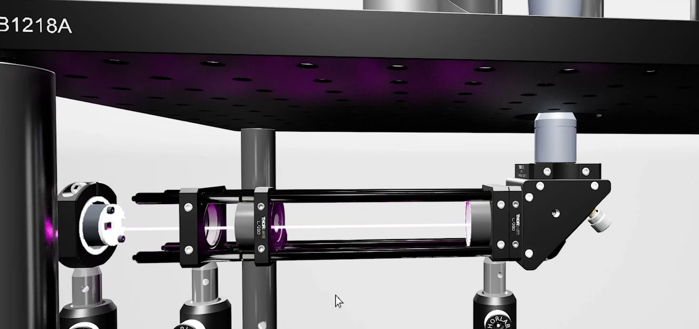
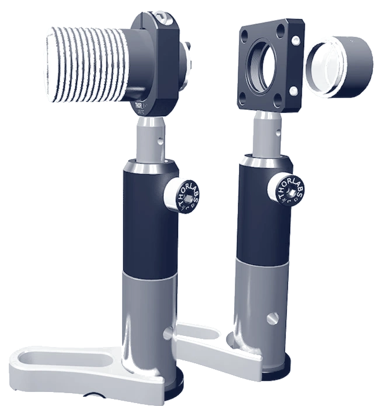

WideField Assembly
An interactive wide-field microscope in Unreal Engine. Inspect the optics, follow the build sequence, and snap components together on a virtual optical bench.
View projectStudent portfolio
I study Computer Science and Data Science at UW–Madison. My interests span software engineering, technical game design, and 3D art.



An interactive wide-field microscope in Unreal Engine. Inspect the optics, follow the build sequence, and snap components together on a virtual optical bench.
View projectAt the University of Wisconsin–Madison, I’ve had the chance to bring my interests in game design and 3D art into a microscopy lab.
During my internship with the Open Source Program Office, I worked on a way to explore microscope hardware in Unreal Engine. A lens mount became something you could pick up, position, and connect to another part.
Internship at UW–Madison